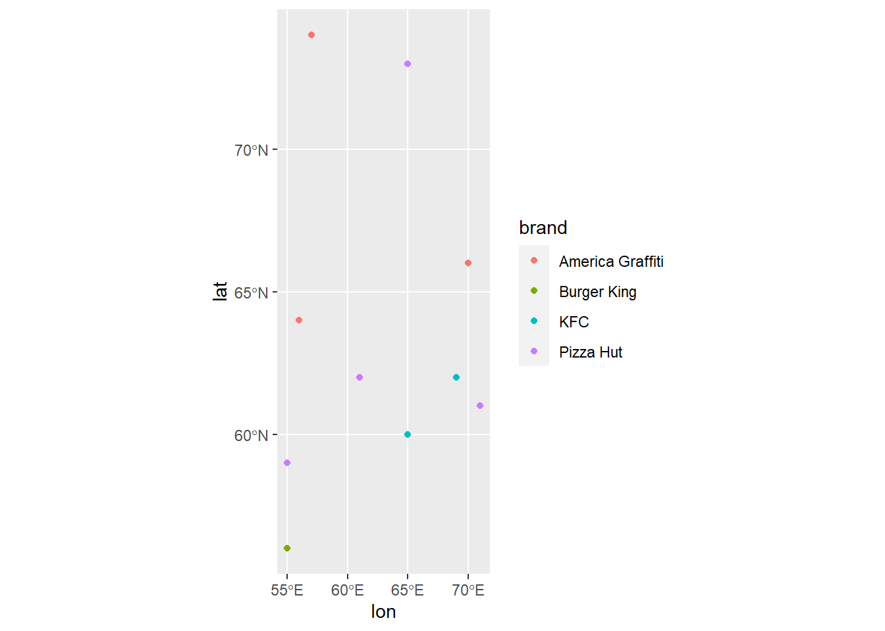
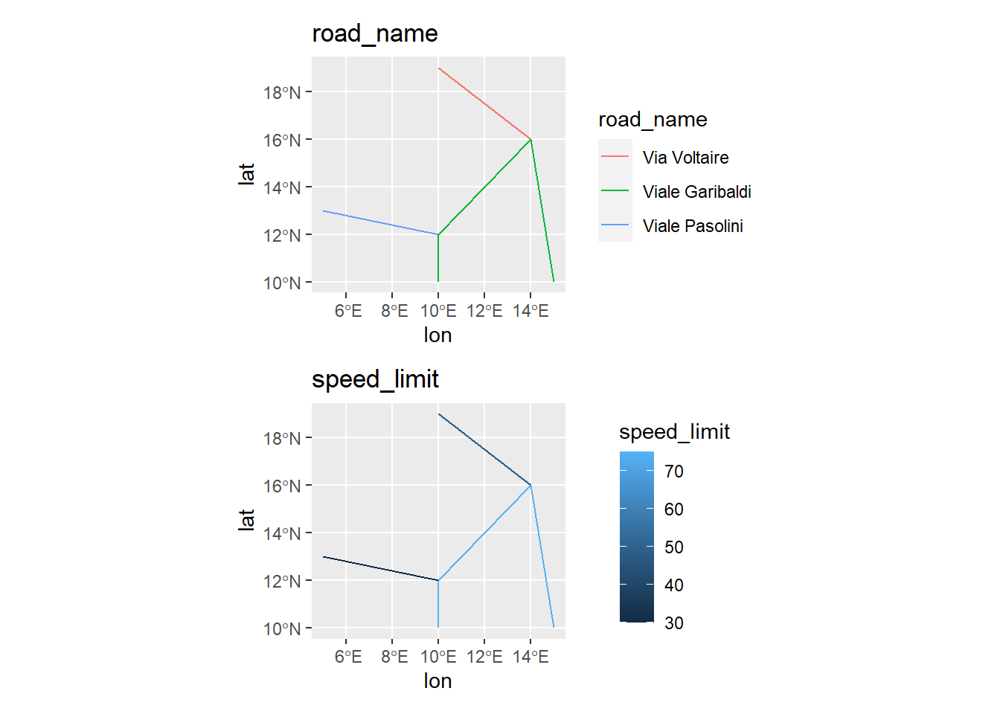

GIS with R - Vector data
GIS is an acronym that is typically used to refer to a geographic information system. We can define a GIS as any software able to read, store, analyze, combine and manipulate spatially referenced data. The main conceptual feature of a geographic information system is that it can layer data based on their co-location such that seemingly unrelated data can be combined based on the fact they are located in the same area (see Figure 1).
Tipically GIS represent spatial data in two different formats (or combinations of both):
- Vector data: represent spatial features with points, lines, polygons and other geometries. These have discrete, well-defined borders, meaning that vector datasets usually have a high level of precision. More in detail, the geographic vector data model is based on points located within a coordinate reference system (CRS). Points can represent self-standing features (for example the location of a bus stop) or they can be linked together to form more complex geometries such as lines and polygons
- Raster data: represent spatial features with continuous grids of pixels. Raster datasets are the basis of background images used in web-mapping and have been a vital source of geographic data since the origins of aerial photography and satellite-based remote sensing devices. See GIS with R - Raster data for examples about raster data in R.
For all intents and purposes, R can be used as a GIS. Following I provide some examples on how to deal with vector data in R.
Packages
We start by loading the needed packages.
library(sf)
library(ggplot2)
library(patchwork)The sf package can be used to represent different geometry types in R. In addition to points, lines and polygons, there are 14 additional types of geometry that can be represented in sf which for now we ignore, but are detailed in the sf vignette. ggspatial package is a spatial data framework for ggplot2 .
Points
Points are the simplest spatial geometry, and are defined by a single XY coordinate. We can use sf::st_point() function to define a point.
pt <- sf::st_point(c(10,20))
attributes(pt)$class
[1] "XY" "POINT" "sfg" attributes() function shows the different components of the object. As we can see, we got an sfg object of geometry type POINT as output. sfg is shorthand for Simple Feature Geometry objects, aka objects that only store XY coordinates and don’t have any information on the geographic coordinate system, datum or projection those coordinates are in, nor do they have any other attribute data associated with that point.
If we want to create an object with more than one point we need to aggregate points objects into a Simple Feature geometry Column (sfc) object, with sf:st_sfc() function.
#### list of random points with coords between 40 and 75
n <- 10
vec <- c(55:75)
ls <- vector("list", n)
ls <- lapply(1:n, sample, x = vec, size = 2) |> lapply(st_point)
names(ls) <- paste("point", seq(1:n), sep = "")
#### sfc object
pts_sfc <- sf::st_sfc(ls)
attributes(pts_sfc)$names
[1] "point1" "point2" "point3" "point4" "point5" "point6" "point7"
[8] "point8" "point9" "point10"
$class
[1] "sfc_POINT" "sfc"
$precision
[1] 0
$bbox
xmin ymin xmax ymax
55 56 71 74
$crs
Coordinate Reference System: NA
$n_empty
[1] 0As you can see, sfc objects store additional attributes, like the bounding box (smallest rectangle that would encompass all elements in the data), decimal precision of coordinates, and CRS which is blank for now. Each reference system is defined by a corresponding EPSG code; see EPSG website, Spatial Reference website and GIS with R - CRSs in R post for more details. To add a CRS attribute to our sfc object, add a crs parameter to sf::st_sfc() function. For example, let’s say that we built the data based on longitude and latitude coordinates using a very commonly used geographic coordinate system called WGS84, which has an EPSG code of 4326.
pts_sfc <- sf::st_sfc(ls, crs = 4326)
attributes(pts_sfc)$names
[1] "point1" "point2" "point3" "point4" "point5" "point6" "point7"
[8] "point8" "point9" "point10"
$class
[1] "sfc_POINT" "sfc"
$precision
[1] 0
$bbox
xmin ymin xmax ymax
55 56 71 74
$crs
Coordinate Reference System:
User input: EPSG:4326
wkt:
GEOGCRS["WGS 84",
ENSEMBLE["World Geodetic System 1984 ensemble",
MEMBER["World Geodetic System 1984 (Transit)"],
MEMBER["World Geodetic System 1984 (G730)"],
MEMBER["World Geodetic System 1984 (G873)"],
MEMBER["World Geodetic System 1984 (G1150)"],
MEMBER["World Geodetic System 1984 (G1674)"],
MEMBER["World Geodetic System 1984 (G1762)"],
MEMBER["World Geodetic System 1984 (G2139)"],
ELLIPSOID["WGS 84",6378137,298.257223563,
LENGTHUNIT["metre",1]],
ENSEMBLEACCURACY[2.0]],
PRIMEM["Greenwich",0,
ANGLEUNIT["degree",0.0174532925199433]],
CS[ellipsoidal,2],
AXIS["geodetic latitude (Lat)",north,
ORDER[1],
ANGLEUNIT["degree",0.0174532925199433]],
AXIS["geodetic longitude (Lon)",east,
ORDER[2],
ANGLEUNIT["degree",0.0174532925199433]],
USAGE[
SCOPE["Horizontal component of 3D system."],
AREA["World."],
BBOX[-90,-180,90,180]],
ID["EPSG",4326]]
$n_empty
[1] 0As you can see, we succesfully added a CRS attribute to our set of points. However, sfc objects don’t support custom attributes (not intended as R object attributes, but rather as characteristics associated with any given feature in a vector dataset).
For example, let’s say the points I just created represent the location of fast food restaurants, and for each restaurant we have informations about the corresponding brand. Since sfc objects can’t store additional attributes, we need to create a Simple Feature (sf) object with sf::st_sf() function which can integrate both the location and the attribute data. First we create the attribute dataset:
#### Casual brand attributes from list of brands
brands <- c("McDonald's", "Burger King", "America Graffiti", "KFC", "Pizza Hut")
att <- data.frame(brand = sample(brands, n, replace = T))
attNow we can associate the attributes with location data:
pts_sf <- sf::st_sf(att, geometry = pts_sfc)
pts_sfFinally we can plot our data with ggplot2 package.
p <- ggplot2::ggplot(pts_sf, aes(geometry = geometry, colour = brand)) +
geom_sf() +
labs(x = "lon", y = "lat")
p
Lines
We can repeat the same process as above, but for line objects (LINESTRING geometry). We can create a single line with sf::st_linestring() function, which takes as input a matrix with at least two XY coordinates.
line <- matrix(c(10,12,20,15,22,21,10,6,5,16), ncol = 2, byrow = T) |>
sf::st_linestring()
lineLINESTRING (10 12, 20 15, 22 21, 10 6, 5 16)Below an sfc object with multiple lines and associated CRS code.
l1 <- matrix(c(10,10,10,12,14,16,15,10), ncol = 2, byrow = T) |> sf::st_linestring()
l2 <- matrix(c(14,16,10,19), ncol = 2, byrow = T) |> sf::st_linestring()
l3 <- matrix(c(10,12,5,13), ncol = 2, byrow = T) |> sf::st_linestring()
line_sfc <- sf::st_sfc(l1,l2,l3, crs = 4326)
line_sfcGeometry set for 3 features
Geometry type: LINESTRING
Dimension: XY
Bounding box: xmin: 5 ymin: 10 xmax: 15 ymax: 19
Geodetic CRS: WGS 84LINESTRING (10 10, 10 12, 14 16, 15 10)LINESTRING (14 16, 10 19)LINESTRING (10 12, 5 13)Let’s say these lines represent roads. We now create a dedicated attribute dataframe, with road names and speed limits, and attach them to lines data with sf::st_sf() .
l_att <- data.frame(road_name = c("Viale Garibaldi", "Via Voltaire", "Viale Pasolini"),
speed_limit = c(75, 50, 30))
line_sf <- sf::st_sf(l_att, line_sfc)
line_sfNow let’s plot the lines.
p1 <- ggplot2::ggplot(line_sf, aes(geometry = line_sfc, colour = road_name)) +
geom_sf() +
labs(title = "road_name", x = "lon", y = "lat")
p2 <- ggplot2::ggplot(line_sf, aes(geometry = line_sfc, colour = speed_limit)) +
geom_sf() +
labs(title = "speed_limit", x = "lon", y = "lat")
p1 / p2
Polygons
Polygons are enclosed linestrings (first and last vertex are the same). You can create POLYGON geometries with sf::st_polygon() function. The function takes a list as an argument which contains one or more linestring matrices where the first and last rows are the same XY coordinate within a list element.
pol_list <- matrix(c(10,10,10,20,20,20,20,10,10,10), ncol = 2, byrow = T) |> list()
pol <- sf::st_polygon(pol_list)
attributes(pol)$class
[1] "XY" "POLYGON" "sfg" You can create more complex polygons by adding more polygon matrices to the list. For example, you can add a hole to the main polygon, by encompassing a smaller polygon.
pol_list[[2]] <- matrix(c(15,15,15,16,16,16,16,15,15,15), ncol = 2, byrow = T)
pol_with_hole <- sf::st_polygon(pol_list)
plot(pol_with_hole, col = c("red3"))Like for points and lines, you can create an sf object with multyple polygons, attributes and a CRS.
triangle <- matrix(c(1,1,3,4,5,1,1,1), ncol = 2, byrow = T) |> list() |> sf::st_polygon()
square <- matrix(c(1,5,1,9,5,9,5,5,1,5), ncol = 2, byrow = T) |> list() |> sf::st_polygon()
pentagon <- matrix(c(8,3,7,5,9,7,11,5,10,3,8,3), ncol = 2, byrow = T) |> list() |> sf::st_polygon()
pol_sfc <- sf::st_sfc(triangle, square, pentagon, crs = 4326)
pol_att <- data.frame(type = c("triangle", "square", "pentagon"))
pol_sf <- sf::st_sf(pol_att, pol_sfc)
pol_sfBelow the three polygons plotted with ggplot2 package.
polyplot <- ggplot2::ggplot(pol_sf, aes(geometry = pol_sfc, fill = type)) +
geom_sf(show.legend = F) +
geom_sf_text(aes(label = type)) +
labs(x = "lon", y = "lat", title = "Some polygons on 4326 CRS")
polyplot